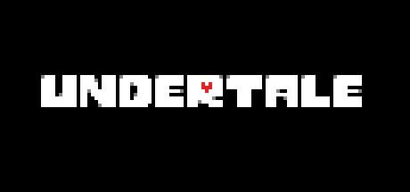

Undertale é um 2015 role-playing videogame criado pela American desenvolvedor indie
Tobyfox. O jogador controla uma criança que caiu no Subsolo: uma grande região
durante a jornada de volta à superfície, alguns dos quais podem entrar em combate.O sistema de combate
envolve o jogador navegando através de mini-inferno bala ataques do adversário. Eles podem optar por
apaziguar monstros, a fim de poupá-los em vez de matá-los. Essas escolhas afetam o jogo, com o diálogo,
os personagens e a história mudando com base nos resultados.